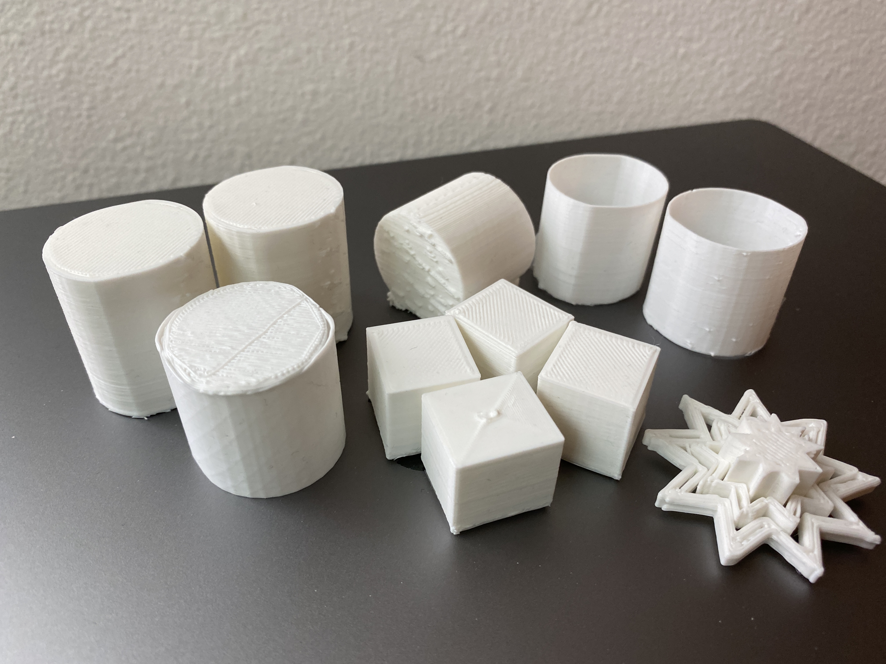

A4: Subtractive Manufacturing!
Nov. 1, 2022
Assembly
Assembling my Ender printer took almost a week due to procrastination. I was able to build out most of it in ~3 hrs. The instructions included in the box included pictures but it was quite hard to visually understand and interpret. I watched videos on YouTube for further explanation on how to properly assemble the parts. The Ultimate Creality Ender 3 Quick Start Guide was the easiest and best video to follow!

Assembling wasn't that bad when following the videos. The most frustrating part was leveling the bed. It took me 2 days and some sleep to get things somewhat leveled out. I leveled the bed a dozen of times and ran multiple bed leveling protocols from Filament Friday. I figured that the bed wasn't the issue... it was the Z-axis. The right side of the Z-axis seems to be wiggly and tend to drag along with the left side of the Z-axis. I had to disassemble the parts and made sure the knobs were secured tightly. I had to download a leveler app to confirm that the bed was leveled properly. After countless hours of trying to figure out what went wrong, it all FINALLY came together!

Designing & Printing
In the last couple of days, the only places I traveled between was within Rhino and Cura. I would design in Rhino and export the file to Cura. Most of the print settings were located in Cura. As someone who has never used that software before, I thought the print settings were really easy to navigate through.

When printing cubes, I had issues with adhesion. I changed the bed temperature from 50F to 80F and the print speed from 50mm/s to 30mm/s. Additionally, I used a BRIM for build plat adhesion. It was so satisfying to be able to peel it off from the cubes after it's finished printing.
Just when I got the hang out printing, I've encountered multiple spaghetti monster incidents. When printing cylinders, they didn't want to stick to the bed even when it was super hot. I had to print the cylinders a couple of times and pay close attention to them.
I liked the idea of creating multiple stars so I went with the idea and designed it in Rhino. After printing and assembling the nest items was when I realized that the stars ressembled a snowflake, especially when the filament is white - I'm not mad about the result!
Acknowledgement
- Blair for the results table
- YouTube videos for coming in clutch when I couldn't comprehend paper instructions
- Friends on BeReal...something's so comforting knowing that I'm not alone and struggling with this week's assignment :'-)
Source Files
Return to Main